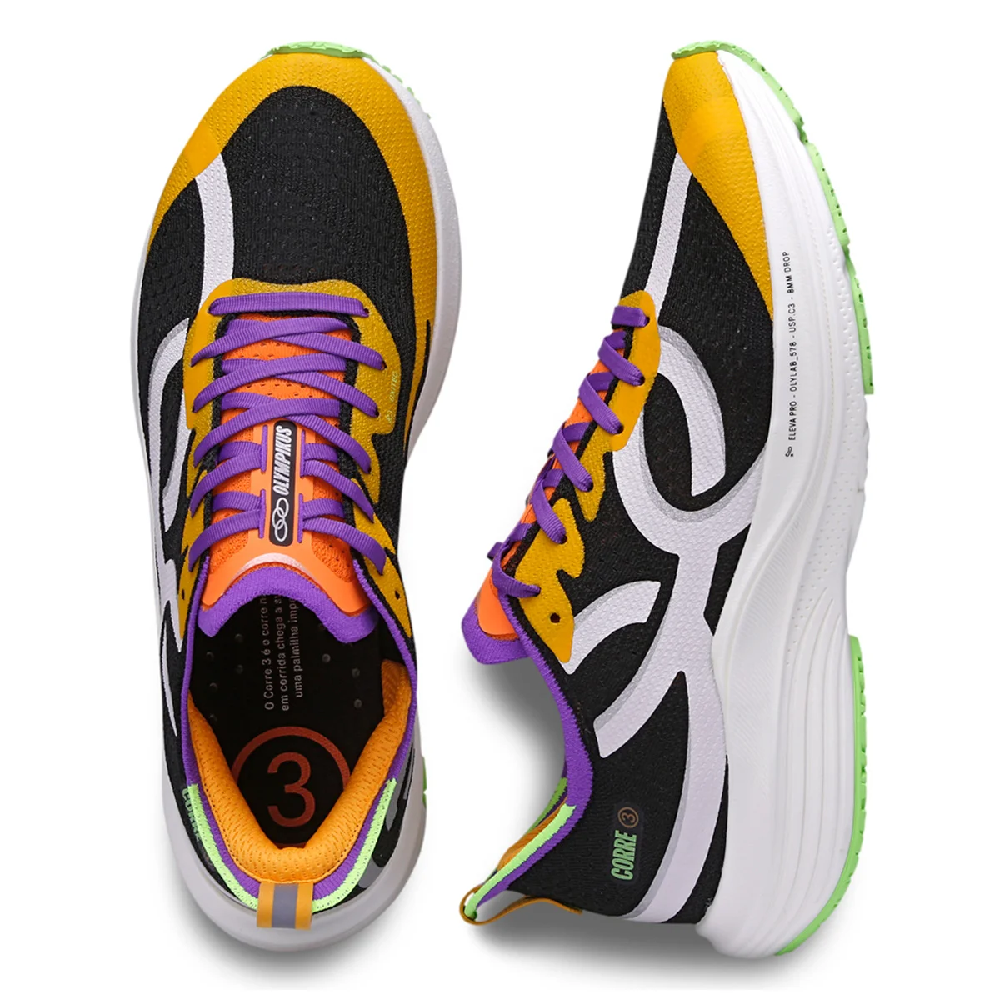

Item mais pedido
O Corre 3 é indicado para corredores iniciantes e intermediários que buscam um tênis com bom custo-benefício para seus treinos e competições. Ele é adequado para corridas de curta e média distância e também para uso em academias ou caminhadas.
Destaque
O Corre Supra é recomendado para corredores de nível intermediário a avançado que participam de treinos de alta intensidade e provas de longa distância, como meia-maratonas e maratonas. Também é uma ótima escolha para corredores que desejam um tênis leve, confortável e com bom suporte para treinos diários.
Correr regularmente traz diversos benefícios para a saúde física, mental e emocional. Aqui está uma lista de alguns dos principais benefícios da corrida: Benefícios Físicos: Melhora a Saúde Cardiovascular: A corrida fortalece o coração, melhora a circulação sanguínea e ajuda a reduzir a pressão arterial, diminuindo o risco de doenças cardíacas. Aumenta a Resistência e a Capacidade Pulmonar: Correr regularmente melhora a capacidade pulmonar e a eficiência respiratória, aumentando a resistência e a capacidade de realizar atividades físicas. Ajuda na Perda e Manutenção de Peso: A corrida é uma atividade de alta queima calórica, ajudando a perder peso e a manter o peso ideal ao longo do tempo. Fortalece Músculos e Ossos: Correr fortalece os músculos das pernas, glúteos e core. Também promove a densidade óssea, ajudando a prevenir a osteoporose. Melhora a Qualidade do Sono: Atividades físicas regulares, como a corrida, ajudam a melhorar a qualidade do sono e podem reduzir a insônia. Aumenta a Imunidade: Exercícios regulares, como a corrida, podem fortalecer o sistema imunológico, ajudando a combater infecções e doenças. Regula o Metabolismo: A corrida pode acelerar o metabolismo, o que ajuda a manter o peso saudável e o bom funcionamento do corpo.
Benefícios Mentais e Emocionais: Reduz o Estresse e a Ansiedade: A corrida ajuda a liberar endorfinas, neurotransmissores que promovem a sensação de bem-estar e aliviam o estresse e a ansiedade. Melhora o Humor: A prática regular de corrida está associada à melhoria do humor e à redução dos sintomas de depressão. Aumenta a Autoconfiança: Cumprir metas de corrida, como completar uma distância específica ou melhorar o tempo, pode aumentar a autoconfiança e a autoestima. Melhora a Concentração e o Foco: Correr regularmente pode melhorar a função cognitiva, ajudando a manter o foco e a concentração em outras atividades do dia a dia. Promove a Socialização: Participar de grupos de corrida ou eventos esportivos é uma ótima maneira de conhecer novas pessoas e formar laços sociais.